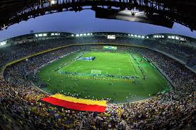
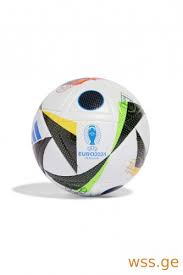

<h1>რა არის ფეხბურთი</h1>
<h4>ფეხბურთი არის სპორტული თამაში სადაც  22 კაცი დასდევს ერთ ბურთს  თამაში არის 90 წუთიანი სადაც 45 წუთი არის ერთი ტაიმი<br> ერთ მატჩში არის 2 ტაიმი და 15 წუთიანი შესვენება</h4>
<h4> 2 გუნდი ეწინააღმდეგება ერთმანეტს, თითო გუნდში არის 11 კაცი</h4>

